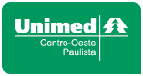

<?xml version='1.0' encoding='UTF-8' ?>
<!DOCTYPE html PUBLIC "-//W3C//DTD XHTML 1.0 Transitional//EN" "http://www.w3.org/TR/xhtml1/DTD/xhtml1-transitional.dtd">
<html xmlns="http://www.w3.org/1999/xhtml"
      xmlns:h="http://java.sun.com/jsf/html"
      xmlns:jsf="http://xmlns.jcp.org/jsf"
      xmlns:ui="http://xmlns.jcp.org/jsf/facelets"
      xmlns:p="http://primefaces.org/ui">
    <h:body>

        <ui:composition template="template/layout.xhtml">
            <ui:define name="corpo">

                <div class="page">
                    <!-- navbar Barra Superior-->
                    <header class="header">
                        <nav class="navbar" style="background-color: #02381e; border-color: #000;">
                            <div class="container-fluid">
                                <div class="navbar-holder d-flex align-items-center justify-content-between">
                                    <div class="navbar-header"><a id="toggle-btn" href="#" class="menu-btn"><i class="fa fa-reorder" style="color:greenyellow"></i></a><a href="index.xhtml" class="navbar-brand">
                                            <div class="brand-text d-none d-md-inline-block"><strong style="color: white">ENVIOS ANS</strong></div></a></div>
                                    <ul class="nav-menu list-unstyled d-flex flex-md-row align-items-md-center">

                                        <!-- Log out-->
                                        <li class="nav-item"><a href="telaLogin.xhtml" data-toggle="modal" data-target="#logoutModal" class="nav-link logout"> <span class="d-none d-sm-inline-block"></span><i class="fa fa-power-off" title="Trocar de Usuário"></i></a></li>
                                    </ul>
                                </div>
                            </div>
                        </nav>
                    </header>

                    <!-- Modal Logout -->
                    <div class="modal" id="logoutModal" tabindex="-1" role="dialog" aria-hidden="true">
                        <div class="modal-dialog modal-sm">
                            <div class="modal-content">
                                <div class="modal-header">
                                    <h4>Trocar de Usuário <i class="fa fa-lock"></i></h4>
                                    <button type="button" class="close" data-dismiss="modal" aria-label="Close"><span aria-hidden="true">x</span></button>
                                </div>
                                <div class="modal-body">
                                    <p>Tem certeza que deseja sair?</p>
                                    <div class="actionsBtns">
                                        <form>
                                            <button type="button" class="btn btn-success" data-dismiss="modal" onclick="location.href = 'telaLogin.xhtml';">Sim</button>
                                            <button class="btn btn-danger" data-dismiss="modal">Não</button>
                                        </form>
                                    </div>
                                </div>
                            </div>
                        </div>
                    </div>


                    <div class="breadcrumb-holder">
                        <div class="container-fluid">
                            <ul class="breadcrumb">
                                <li class="breadcrumb-item">Home</li>
                            </ul>
                        </div>
                    </div>

                    <!-- Corpo da Página-->
                    <section class="forms">
                        <div class="container-fluid">

                            <p:growl escape="true" id="msgEdit" 
                                     showDetail="true"
                                     showSummary="true">
                                <p:autoUpdate/>         
                            </p:growl>

                            <div class="row">

                                <div class="col-lg-6"> 
                                    <div class="card">
                                        <div class="card-header d-flex align-items-center">
                                            
                                        </div>


                                        <p><strong>A Agência Nacional de Saúde Suplementar (ANS)</strong> é a agência reguladora vinculada ao Ministério da Saúde&nbsp;responsável pelo setor de planos de saúde no Brasil.</p>
                                        <p>A sede da ANS fica na cidade do Rio de Janeiro, na Avenida Augusto Severo, n° 84, no bairro da Glória. O atendimento ao cidadão sobre planos de saúde é feito pela <a href="http://www.ans.gov.br/planos-de-saude-e-operadoras/espaco-do-consumidor/central-de-atendimento-ao-consumidor" target="blank">Central de Atendimento ao Consumidor</a> na internet, pelo Disque-ANS 0800 701 9656 e pelos <a href="http://www.ans.gov.br/aans/nossos-enderecos" target="blank">Núcleos da ANS</a>&nbsp;espalhados pelo país.</p>
                                        <p><a href="http://www.ans.gov.br/" target="blank">Site ANS</a></p>
                                    </div>
                                </div>
                                <div class="col-lg-6"> 
                                    <div class="card">
                                        <div class="card-header d-flex align-items-center">
                                            
                                        </div>


                                        <p><strong>A Unimed Centro-Oeste Paulista - Federação Intrafederativa das Cooperativas Médicas</strong>, fundada em 1996, está localizada no interior do Estado de São Paulo e fornece apoio administrativo e representativo às demais unidades da região centro-oeste paulista. A instituição preza pela integração entre as 13 Unimeds que fazem parte deste domínio, promovendo troca de experiências, busca pelo conhecimento e compartilhamento de informações estratégicas. Todo este trabalho garante visibilidade da atuação de nossa região perante o Sistema Unimed.</p>
                                        <p>No total desta união, somam-se cerca de 3.006 médicos cooperados e 3.100 colaboradores, estrutura que atende aproximadamente 604 mil clientes, oferecendo uma rede de serviços próprios e/ou credenciados de excelente qualidade.</p>
                                        <p><a href="http://www.unimedcop.coop.br/unicop/pt/index.php" target="blank">Site Unimed COP</a></p>
                                    </div>
                                </div>

                            </div>
                        </div>
                    </section>
                    <footer class="main-footer" style="background-color: #02381e; border-color: #000;">
                        <div class="container-fluid">
                            <div class="row">
                                <div class="col-sm-6">
                                    <p style="color: white">Unimed Centro Oeste Paulista &copy;</p>
                                </div>
                                <div class="col-sm-6 text-right">
                                    <p style="color: white">Desenvolvido por Ericsson Roberto de Barros</p>
                                </div>
                            </div>
                        </div>
                    </footer>
                </div>
                <script type="text/javascript">
                </script> 
            </ui:define>
        </ui:composition>
    </h:body>
</html>
